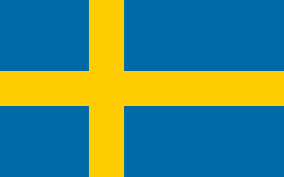
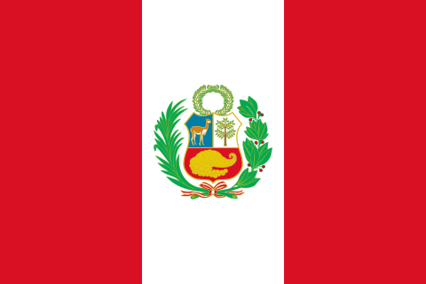
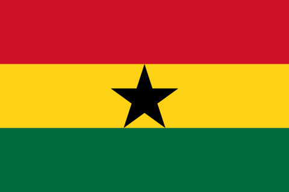
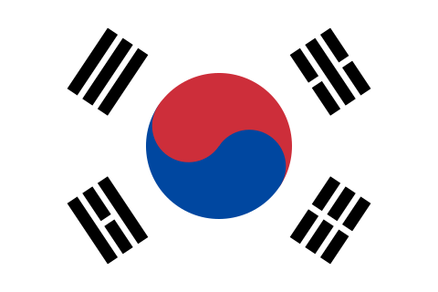
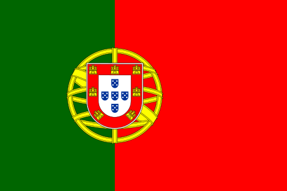

|
Număr
|
Nume |
Țara de origine |
Data ocupării postului |
Data părăsirii postului |
| 1 |
Trygve Lie |
Norvegia |
2 februarie 1946 |
10 noiembrie 1952 |
| 2 |
Dag Hammarskjöld |
Suedia |
10 aprilie 1953 |
18 septembrie 1961 |
| 3 |
U Thant |
Burma |
30 noiembrie 1961 |
31 decembrie 1971 |
| 4 |
Kurt Waldheim |
 Austria Austria |
1 ianuarie 1972 |
31 decembrie 1981 |
| 5 |
Javier Pérez de Cuéllar |
Austria |
1 ianuarie 1982 |
31 decembrie 1991 |
| 6 |
Boutros Boutros-Ghali |
Egipt |
1 ianuarie 1992 |
31 decembrie 1996 |
| 7 |
Kofi Annan |
Ghana |
1 ianuarie 1997 |
31 decembrie 2006 |
| 8 |
Ban Ki-moon |
Coreea de Sud |
1 ianuarie 2007 |
31 decembrie 2016 |
| 9 |
Antonio Guterres |
Portugalia |
1 ianuarie 2017 |
Încă în funcție |